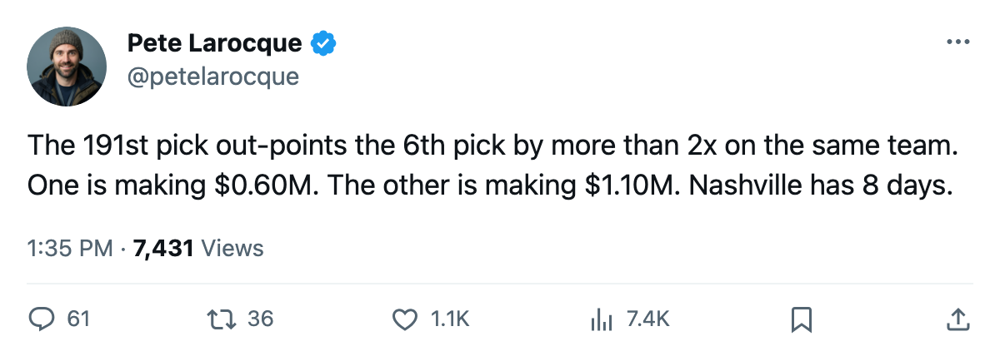
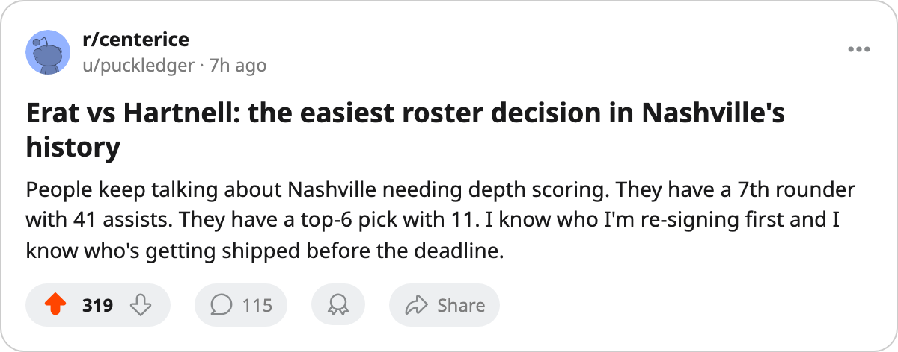

The 191st Pick Has 41 Assists. The 6th Pick Has 11. They Play for the Same Team.
Martin Erat and Scott Hartnell sat far apart on draft day. This season the gap is 25 points, and both contracts expire in a year.
 Pete LarocqueScouting editor · The Prospect File
Pete LarocqueScouting editor · The Prospect File Martin Erat79 has 41 assists in 64 games for
Martin Erat79 has 41 assists in 64 games for  Nashville Predators.
Nashville Predators.  Scott Hartnell78 is also in Nashville, with 11 in 67. Erat went 191st in 1999. Hartnell went 6th in 2000.
Scott Hartnell78 is also in Nashville, with 11 in 67. Erat went 191st in 1999. Hartnell went 6th in 2000.
Nashville sits 1st in the Central Division at 90 points, 8 days from what the calendar has as the trade deadline. Both men's deals expire in a year. Erat's is at $0.60M. Hartnell's is at $1.10M. The Predators are deciding who they can keep, and the numbers on the sheet make that decision look easy until you read the potential grades.
The Book gives Erat 86. It gives Hartnell 94. The Development Index has Hartnell at +2 and Erat at +1, which means the Bureau thinks Hartnell's current 77 overall reads two points above his base, while Erat's 78 is only one above his. On the Book's own logic, Hartnell is the player expected to get better. The ice says otherwise.
What the tools show
Erat's speed is 90. Hartnell's is 85. His puck handling is 78 to Hartnell's 64, a 14-point gap. Their passing grades are identical at 79. Hartnell carries the checking advantage, 87 to 78, and the endurance gap is wider still, 80 to 64.
That endurance number explains Hartnell's usage. He plays 13.5 minutes a night. Erat plays 20.8. The coaches trust Erat to drive a line for 20 minutes because he has the speed and the hands to do it. They use Hartnell in 13-minute bursts where the checking and the stamina matter more than the puck.
The problem is that at $1.10M and 22 points, that role can be filled cheaper. The Bureau's 94 potential says wait. The sheet says Erat is the better player right now, on half the money, and has been all season.
The contract math
Both expire. Erat at $0.60M on a 1-year deal. Hartnell at $1.10M on a 1-year deal. Nashville has $0.60M committed to the player producing 47 points, and $1.10M committed to the one producing 22.
If Nashville re-signs Erat to something approaching market value for a 20-minute-first-line winger, they will still pay him less than they pay Hartnell today for a third of the production.
The 94 potential complicates it. A club that trades Hartnell at the deadline gives up a 22-year-old former top-6 pick with a Development Index that is trending up. The 94 says the ceiling is real. The 22 points in 67 games say it has not arrived, and at $1.10M in a salary-capped league, ceilings do not pay for themselves.
Erat is 23. He was born 1981-08-29, late enough in the year that he would have been among the oldest players in his draft class if he had been eligible in 1999. He was 18 when Nashville picked him 191st. The Predators took him with their 12th choice of that draft. He has spent three seasons in the league since and has 41 assists this year, the most by any player at NSH.
Hartnell is also 22, the 6th pick in a draft where the 1st went to Atlanta and the 2nd to Atlanta and the 3rd to Toronto. He was supposed to be a top-6 winger from day one. Three years in, he is a middle-six player with a top-6 price tag and a 94 potential the Bureau will not walk away from.
The trade deadline question
Nashville is at 90 points with 15 games left, in the middle of the pack for a team that could go out in the first round or could win a series. The difference between those outcomes is about one or two players.
Erat on a new deal is one of those players. Hartnell on $1.10M producing 22 points is not. The Predators can move him by March 19 and get something back for a 22-year-old with 94 potential, which is the kind of asset that moves in a trade market. Or they can hold him and bet that +2 on the Index means +10 next year.
The sheet says Erat is the better player today. The Book says Hartnell might be the better player eventually. With 8 days to go, Nashville has to decide if it is contending now or still building.

